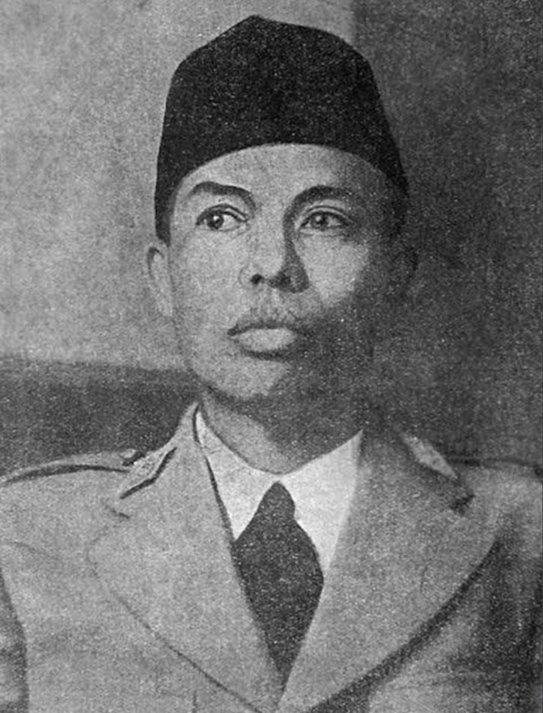

Waktu :
Terjadi pada tanggal 20 November hingga 15 Desember 1945.
Merupakan masa-masa awal setelah Proklamasi Kemerdekaan Indonesia (17 Agustus 1945)
Tempat :
1. Ambarawa, sebuah kota kecil di Kabupaten Semarang, Jawa Tengah.
2. Pertempuran juga mencakup daerah sekitar seperti Magelang, Banyubiru, dan Semarang.
3. Benteng Willem di Ambarawa menjadi salah satu titik penting yang diperebutkan.
Tokoh Pertempuran

GPH Djatikusumo :
Komandan divisi IV yang bertugas melacak dan mengepung pasukan asing.

K.H. Saifuddin Zuhri :
Ulama pemimpin Laskar Hizbullah yang berjuang bersama TKR dan pemuda Indonesia.

Letnan Kolonel Isdiman :
Perwira Tentara Keamanan Rakyat, dan juga Komandan Resimen TKR Banyumas sekaligus perwira menengah dalam sistem kemiliteran indonesia.

Jenderal Soedirman :
Panglima besar TNI pertama dan pemimpin Tentara Keamanan Rakyat (TKR) yang memimpin pasukan dalam perang gerilya.

Letkol Sarbini Martodiharjo :
Memimpin pasukan Tentara Keamanan Rakyat Resimen Kedu Tengah dan menyerang, serta mengepung tentara Sekutu dan NICA

Gatot Soebroto :
Prajurit satu tentara keamanan rakyat Indonesia yang dimulai karier militernya di Tentara Kerajaan Hindia Belanda.

Soerono Reksodimedjo :
Kepala Staf TNI Angkatan Darat dari April 1973 hingga Mei 1974 dan Wakil Panglima Angkatan Bersenjata.